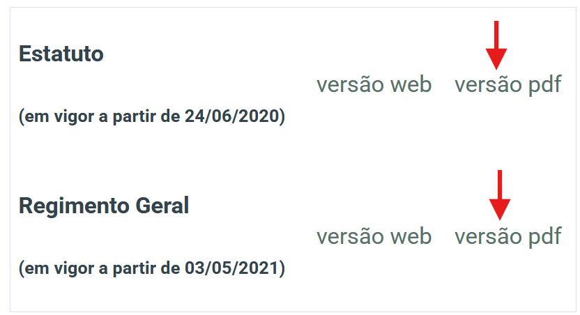
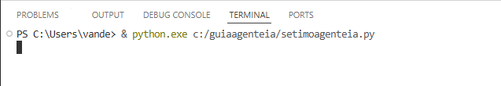
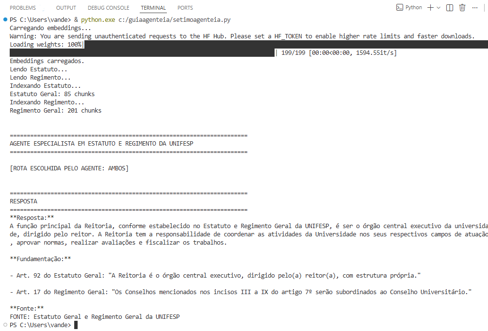
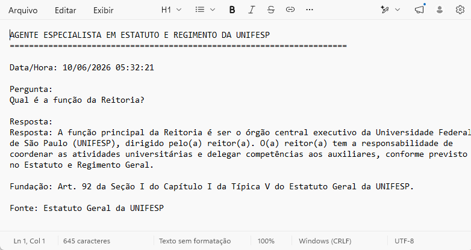

ollama pull qwen2.5:3b4.7 Laboratório Prático 7: RAG para pesquisa em documentos institucionais com Python
Análise e Objetivo Geral

Este laboratório prático com nível avançado tem como objetivo capacitar o usuário na geração de sistemas de Recuperação Aumentada por Geração (Retrieval-Augmented Generation – RAG) , conforme AWS - Amazon Web Services (2026) para pesquisa em documentos institucionais utilizando a linguagem Python. A atividade aborda desde a extração e processamento de informações contidas em documentos PDF de base institucional até a criação de bases vetoriais para recuperação semântica de conteúdo, integrando modelos de embeddings e modelos de linguagem de grande porte (LLMs) executados localmente.
Ao executar o agente de IA em seu computador institucional, as informações permanecem na sua máquina e não são enviadas para servidores externos (como OpenAI ou Google), evitando o compartilhamento de dados sensíveis, isto simplifica bastante a conformidade com a Lei Geral de Proteção de Dados (LGPD), uma vez que não ocorre transferência internacional de dados. Além disso, por rodar localmente, o modelo não requer chaves de API, não envia dados à internet e elimina custos com assinaturas ou serviços pagos.
Pré requisitos
Para garantir o desempenho ideal e a compatibilidade com as ferramentas mencionadas, certifique-se de que seu hardware atende às seguintes especificações:
Sistema Operacional: Windows 10 ou Windows 11 (versões de 64 bits recomendadas).
Arquitetura: Processador x64 ou ARM64.
Permissões: Acesso de nível administrativo para instalação de software e execução de comandos via terminal (CMD/PowerShell).
Conhecimentos básicos na linguagem Python e Visual Studio Code.
Pelo menos 2,0 GB de espaço em disco do computador, devido o modelo qwen2.5:3b no Ollama.
📋 Praticidade: Copiando os Códigos
Não é necessário selecionar o texto dos blocos de código manualmente. No canto superior direito de cada caixinha de código (chunk), existe um ícone de prancheta invisível que aparece ao passar o cursor do mouse. Basta clicar nele para copiar todo o script diretamente para a sua área de transferência.
1° Passo: Instalação do Python e Visual Studio Code
Para instalar o Python através do site oficial do Python ou Python Software Foundation (2024), você deve seguir passos essenciais para instalação da versão mais atual:
- Pouse o mouse em Downloads e clique no botão Python install manager, localize o local onde está o Instalador
python-manager-26.1.msixe execute este arquivo do instalador e siga as instruções padrão.

Para instalar o Visual Studio Code através do site oficial da Visual Studio Code ou Microsoft (2024), você deve seguir estes dois passos essenciais para instalação da versão mais atual:
- Instalar o Visua Studio Code: Clique no botão “Windows - Windows 10, 11” ou outro sitema operacinal disponível em seu computador, será efetuado o download para a versão mais recente do momento, como exemplo: VSCodeUserSetup-x64-1.118.0.exe and Install R”. Execute este arquivo do instalador e siga as instruções padrão.
Assista também o VÍDEO para auxiliar na instalação do Visual Studio Code: ▶️ https://youtu.be/vr_B4dNkgrM

2° Passo: Obtendo seu modelo LLM local
Para instalar o Ollama no Windows localmente através do site oficial https://ollama.com/download/windows ou Ollama (2026):
Assista também o VÍDEO para auxiliar na instalação do Ollama: ▶️ https://youtu.be/VMS0ZLPRcEc
Download: Acesse o link e clique no botão de Download for Windows.
Instalação: Execute o arquivo OllamaSetup.exe. O processo é automático e, ao finalizar, o ícone do Ollama aparecerá na sua barra de tarefas (perto do relógio).
Após concluir a instalação do Ollama, siga os passos abaixo para configurar seu primeiro modelo de linguagem local (LLM):
- Seleção do Modelo:
Acesse https://ollama.com/library para explorar os modelos disponíveis.
No campo de busca, procure por qwen2.5, por ser um modelo bastante eficiente conforme Yang et al. (2024).

Notas Gerais
A Qwen2 supera a maioria dos modelos anteriores de peso aberto, incluindo seu antecessor Qwen1.5, e exibe desempenho competitivo em relação a modelos proprietários em diversos benchmarks sobre compreensão de linguagem, geração, proficiência multilíngue, codificação, matemática e raciocínio, conforme resumo de Yang et al. (2024).
Em seguida na seção Models, localize qwen2.5:3b.

Clique sobre o modelo desejado e copie o nome exato exibido na seção principal.
- Preparação do Ambiente:
Abra o Prompt de Comando (CMD) ou o PowerShell através da barra de busca do Windows. Como podemos observar na figura a seguir:

- Download e Execução:
O Qwen 2.5 (3b) é uma versão extremamente leve e rápida, ideal para tarefas simples como identificar gênero, pois não exige tanto do processador do seu computador. Para baixar o modelo, digite o seguinte comando:
Como podemos observar na figura a seguir:

Aguarde a conclusão do download. O Ollama iniciará automaticamente uma interface de chat no terminal assim que terminar.
- Gerenciamento e Verificação:
Listar modelos: Para visualizar todos os modelos já instalados no seu computador, utilize:
ollama listComo podemos observar na figura a seguir:

Testar instalação: Caso já tenha baixado o modelo, basta executar o comando:
ollama run qwen2.5:3bComo podemos observar na figura a seguir:

Se o cursor de texto (prompt) aparecer pronto para receber perguntas, a instalação local foi concluída com sucesso.
- Encerrando a Sessão:
Para sair do chat e retornar ao terminal padrão, digite:
/byeComo podemos observar na figura a seguir:

Dica: Para utilizar qualquer outro modelo (como Llama 3 ou Mistral), basta repetir o processo de busca no site da Ollama https://ollama.com/library e substituir o nome do modelo nos comandos acima.
3° Passo: Importanto a base de dados para o laboratório do Portal da Unifesp
Acesse o Portal da Unifesp pelo seguinte link https://portal.unifesp.br/institucional/sobre/estatuto-e-regimento.
Localize a versão PDF do estatuto e do regimento e clique no link para download do arquivo: estatuto_geral.pdf e Resolução_198__0654522__Regimento_Geral.pdf.

Para organizar seu ambiente de trabalho, mova os arquivos baixados da pasta Downloads para o diretório: C:\guiaagenteia\, utilizando os atalhos CTRL + X e CTRL + V. Em seguida descompacta este o conteúdo deste arquivo neste mesmo diretório.
4° Passo: Preparando o ambiente de programação do Script no Visual Studio Code
Com o Visual Studio Code aberto, vamos criar o arquivo onde seu código será executado. Vá ao menu File (Arquivo), selecione New Text File (Novo Arquivo). Na caixa de edição que surgirá, digite ou cole as instruções a seguir para iniciar a programação do agente de IA.

Nomeia e salve,entrando e File, depois “Save As…” este novo arquivo na sua pasta de preferencia: C:\guiaagenteia\, com o seguinte nome: setimoagenteia.py e com a extensão Python (.py ).

5° Passo: Identificando as bibliotecas necessárias e instalações
Nesta etapa são identificadas e instaladas as bibliotecas que serão utilizadas no projeto. Essas bibliotecas fornecem recursos para leitura de documentos PDF, geração de embeddings, indexação vetorial, integração com modelos de linguagem e processamento de textos, formando a base tecnológica necessária para o funcionamento do agente de IA com RAG. No menu superior do Visual Studio Code, localize e abra o Terminal. Com ele aberto, execute o comando abaixo para instalar as bibliotecas necessárias. Essas bibliotecas são pacotes de funções que expandem os recursos do Python. Aguarde a conclusão da instalação destas bibliotecas antes de prosseguir, com o seguintes comandos:
# Atualiza o gerenciador de pacotes pip para a versão mais recente disponível no ambiente Python instalado.
python.exe -m pip install --upgrade pip
pip install pymupdf
pip install faiss-cpu
pip install numpy
pip install sentence-transformers
pip install langchain
pip install langchain-community
pip install langchain-text-splitters
pip install langchain-ollama
e dentro do novo arquivo setimoagenteia.py coloque o primeiro código logo no começo a seguir:
# Biblioteca para processamento e extração de conteúdo textual de documentos PDF.
import fitz
# Biblioteca para indexação vetorial e recuperação eficiente por similaridade.
import faiss
# Biblioteca para computação numérica e manipulação de vetores utilizados nos embeddings.
import numpy as np
# Framework para geração de embeddings semânticos a partir de modelos pré-treinados.
from sentence_transformers import SentenceTransformer
# Interface LangChain para utilização de Large Language Models (LLMs) locais via Ollama.
from langchain_ollama import ChatOllama
# Ferramenta para segmentação de documentos em chunks, facilitando a indexação e recuperação no processo de RAG.
from langchain_text_splitters import RecursiveCharacterTextSplitter
# Manipulação de datas e horários do sistema.
from datetime import datetime6° Passo: Configurações dos Parâmetros
Neste passo são definidos os parâmetros gerais do sistema, como tamanho dos blocos de texto (chunks), sobreposição entre blocos, quantidade de documentos recuperados na busca (Top-K) e caminhos dos arquivos. Esses parâmetros influenciam diretamente a qualidade da recuperação das informações e o desempenho do agente.
##############################################################################
# CONFIGURAÇÃO
##############################################################################
PDF_ESTATUTO = r"C:\guiaagenteia\estatuto_geral.pdf"
PDF_REGIMENTO = r"C:\guiaagenteia\Resolução_198__0654522__Regimento_Geral.pdf"
CHUNK_SIZE = 800
CHUNK_OVERLAP = 100
TOP_K = 27° Passo: Configurações do LLM local
Nesta etapa é configurado o Grande Modelo de Linguagem (LLM) (Qwen) executado localmente por meio do Ollama. São definidos parâmetros como modelo utilizado, temperatura e tamanho do contexto, permitindo que as respostas sejam geradas sem dependência de serviços externos.
##############################################################################
# LLM LOCAL
##############################################################################
llm = ChatOllama(
model="qwen2.5:3b",
temperature=0.01,
num_ctx=4096
)8° Passo: Configurações do Embeddings
Neste passo é carregado o modelo de embeddings responsável por transformar textos em vetores numéricos. Esses vetores representam o significado semântico dos documentos e das perguntas, possibilitando a busca por similaridade entre conteúdos relacionados.
##############################################################################
# EMBEDDINGS
##############################################################################
print("Carregando embeddings...")
embedding_model = SentenceTransformer(
"intfloat/multilingual-e5-base"
)
print("Embeddings carregados.")9° Passo: Configurações das funções auxiliares
Nesta etapa são implementadas funções de apoio que executam tarefas específicas, como leitura de arquivos PDF, geração de embeddings e processamento de textos. Essas funções promovem a reutilização de código e facilitam a manutenção do sistema.
##############################################################################
# FUNÇÕES AUXILIARES
##############################################################################
def ler_pdf(pdf_path):
texto = ""
pdf = fitz.open(pdf_path)
for pagina in pdf:
texto += pagina.get_text()
pdf.close()
return texto
def gerar_embedding(texto):
return embedding_model.encode(
texto,
normalize_embeddings=True
).astype(np.float32)10° Passo: Configurações das variáveis
Neste passo são criadas as variáveis que armazenam documentos, chunks, embeddings, índices vetoriais e demais estruturas utilizadas ao longo da execução. Essas variáveis servem como elementos centrais para o armazenamento temporário e manipulação dos dados processados.
##############################################################################
# LEITURA DOS PDFs
##############################################################################
print("Lendo Estatuto...")
estatuto_texto = ler_pdf(PDF_ESTATUTO)
print("Lendo Regimento...")
regimento_texto = ler_pdf(PDF_REGIMENTO)11° Passo: Criação dos índices - FAISS
Nesta etapa são criados os índices vetoriais utilizando a biblioteca FAISS. Os índices armazenam os embeddings dos documentos e permitem a realização de buscas rápidas por similaridade, mesmo em grandes volumes de informação.
##############################################################################
# CRIAÇÃO DOS ÍNDICES
##############################################################################
def criar_indice(texto, fonte):
splitter = RecursiveCharacterTextSplitter(
chunk_size=CHUNK_SIZE,
chunk_overlap=CHUNK_OVERLAP
)
partes = splitter.split_text(texto)
chunks = []
for parte in partes:
chunks.append({
"texto": parte,
"fonte": fonte
})
print(f"{fonte}: {len(chunks)} chunks")
embeddings = np.array(
[gerar_embedding(chunk["texto"]) for chunk in chunks],
dtype=np.float32
)
dimensao = embeddings.shape[1]
index = faiss.IndexFlatIP(dimensao)
index.add(embeddings)
return index, chunks12° Passo: Indexação
Neste passo ocorre a transformação dos documentos em embeddings e sua inserção nos índices vetoriais. O processo de indexação organiza o conhecimento presente nos documentos para que o agente de IA possa ser recuperado posteriormente durante as consultas realizadas pelo próprio agente.
##############################################################################
# INDEXAÇÃO
##############################################################################
print("Indexando Estatuto...")
index_estatuto, chunks_estatuto = criar_indice(
estatuto_texto,
"Estatuto Geral"
)
print("Indexando Regimento...")
index_regimento, chunks_regimento = criar_indice(
regimento_texto,
"Regimento Geral"
)13° Passo: Configurações da Busca Vetorial
Nesta etapa é implementado o mecanismo de recuperação semântica. Quando uma pergunta é recebida, ela é convertida em embedding e comparada com os vetores armazenados no índice, permitindo localizar os trechos mais relevantes para responder à consulta.
##############################################################################
# BUSCA VETORIAL
##############################################################################
def recuperar_documentos(
pergunta,
index,
chunks,
k=TOP_K
):
pergunta_emb = np.array(
[gerar_embedding(pergunta)],
dtype=np.float32
)
scores, indices = index.search(
pergunta_emb,
k
)
resultados = []
for pos, idx in enumerate(indices[0]):
resultados.append({
"texto": chunks[idx]["texto"],
"fonte": chunks[idx]["fonte"],
"score": float(scores[0][pos])
})
return resultados14° Passo: Configurações das Ferramentas
Neste passo são definidas as ferramentas que o agente poderá utilizar para acessar diferentes bases documentais, como Estatuto e Regimento. Cada ferramenta possui uma responsabilidade específica e funciona como uma fonte especializada de conhecimento.
##############################################################################
# FERRAMENTAS
##############################################################################
def consultar_estatuto(pergunta):
return recuperar_documentos(
pergunta,
index_estatuto,
chunks_estatuto
)
def consultar_regimento(pergunta):
return recuperar_documentos(
pergunta,
index_regimento,
chunks_regimento
)
def consultar_ambos(pergunta):
docs_estatuto = consultar_estatuto(pergunta)
docs_regimento = consultar_regimento(pergunta)
return docs_estatuto + docs_regimento15° Passo: Agente e Prompt
Nesta etapa é construído o agente de IA e elaborado o prompt que orienta seu comportamento. O agente decide quais ferramentas utilizar, enquanto o prompt estabelece regras de resposta, restrições contra alucinações e critérios para utilização exclusiva das informações recuperadas nos documentos.
##############################################################################
# AGENTE
##############################################################################
def agente_unifesp(pergunta):
pergunta_lower = pergunta.lower()
##########################################################################
# DECISÃO
##########################################################################
if "estatuto" in pergunta_lower:
rota = "ESTATUTO"
docs = consultar_estatuto(pergunta)
elif "regimento" in pergunta_lower:
rota = "REGIMENTO"
docs = consultar_regimento(pergunta)
else:
rota = "AMBOS"
docs = consultar_ambos(pergunta)
print(f"\n[ROTA ESCOLHIDA PELO AGENTE: {rota}]")
##########################################################################
# MONTA CONTEXTO
##########################################################################
contexto = ""
for doc in docs:
contexto += f"""
[FONTE: {doc['fonte']}]
{doc['texto']}
========================================================
"""
##########################################################################
# PROMPT
##########################################################################
prompt = f"""
Você é um Especialista em Estatuto e Regimento da Universidade Federal de São Paulo (UNIFESP).
ROTA UTILIZADA:
{rota}
REGRAS:
1. Utilize apenas o contexto fornecido.
2. Nunca invente informações.
3. Nunca utilize conhecimento externo.
4. Se a resposta não estiver presente no contexto, responda:
"Não encontrei essa informação no Estatuto ou Regimento Geral da UNIFESP."
5. Sempre informe a fonte.
6. Cite claramente o documento utilizado.
CONTEXTO:
{contexto}
PERGUNTA:
{pergunta}
FORMATO:
Resposta:
Fundamentação:
Fonte:
"""
resposta = llm.invoke(prompt)
return resposta.content16° Passo: Executando o Agente de IA e Respostas
Neste passo o agente recebe uma pergunta do usuário, consulta os documentos relevantes por meio do mecanismo RAG e gera uma resposta fundamentada utilizando o modelo de linguagem. Todo o fluxo ocorre de forma integrada entre recuperação, contexto e geração textual, conforme definição RAG (Geração Aumentada por Recuperação) AWS - Amazon Web Services (2026)
##############################################################################
# TESTES
##############################################################################
print("\\n")
print("=" \* 70)
print("AGENTE ESPECIALISTA EM ESTATUTO E REGIMENTO DA UNIFESP")
print("=" \* 70)
pergunta = "Qual é a função da Reitoria?"
#pergunta = "Segundo o Estatuto, qual é a finalidade da Unifesp?"
#pergunta = "Segundo o Regimento Geral, quais são as atribuições da Reitoria?"
#pergunta = "Quais são os órgãos colegiados da Unifesp?"
#pergunta = "Quais são os Conselhos Centrais?"
resposta = agente_unifesp(pergunta)
print("\\n")
print("=" \* 70)
print("RESPOSTA")
print("=" \* 70)
print(resposta)
Dicas Práticas e Atalhos
Alterne com novas perguntas para o Agente de IA, basta descomentar a nova questão e deixar as demais comentadas com #, salve logo em seguida o arquivo setimoagenteia.py.
17° Passo: Salvar a resposta em arquivo .txt
Nesta etapa a resposta produzida pelo agente é registrada em um arquivo de texto contendo data e hora da execução. Esse procedimento permite manter um histórico das consultas realizadas, facilitando auditorias, análises posteriores e documentação dos resultados obtidos.
##############################################################################
# SALVAR RESPOSTA EM ARQUIVO .TXT
##############################################################################
datahora = datetime.now().strftime("%Y%m%d_%H%M%S")
arquivo_saida = (
f"c:/guiaagenteia/"
f"resposta_agente_estatuto_regimento_{datahora}.txt"
)
with open(arquivo_saida, "w", encoding="utf-8") as f:
f.write("AGENTE ESPECIALISTA EM ESTATUTO E REGIMENTO DA UNIFESP\n")
f.write("=" * 70 + "\n\n")
f.write(f"Data/Hora: {datetime.now().strftime('%d/%m/%Y %H:%M:%S')}\n\n")
f.write(f"Pergunta:\n{pergunta}\n\n")
f.write("Resposta:\n")
f.write(resposta)
print(f"\nResposta salva em:\n{arquivo_saida}")ou dentro mesmo do terminal do próprio Visual Studio Code que é acessado pelo menu superior View -> Terminal, acrescente na linha de comando o seguinte código ou clique no ícone Run Python File (botão de Play no canto superior direito) do Visual Studio Code para executar o código:
& python.exe c:/guiaagenteia/setimoagenteia.py
& python.exe c:/guiaagenteia/setimoagenteia.py
Dicas Práticas e Atalhos
Caso precisar interromper a execução do código por algum motivo, basta usar as teclas CONTROL + C.
Resultados Esperados após execução do agente de IA
A resposta estará registrada no arquivo .txt, e também exibida no console de execução do Visual Studio Code, conforme a imagem a seguir:
- 📄
c:/guiaagenteia/resposta_agente_estatuto_regimento_<data>_<horário>.txt

A seguir o conteúdo registrado no arquivo .txt

📂 Download do Relatório
Para consultar a saída provável do relatório gerado pelo agente, você pode fazer o download direto dos arquivos de exemplo através do repositório oficial do projeto:
📂 Download do Código Fonte do Sétimo Laboratório
Para consultar o código fonte, você pode fazer o download direto do arquivo de exemplo através do repositório oficial do projeto: